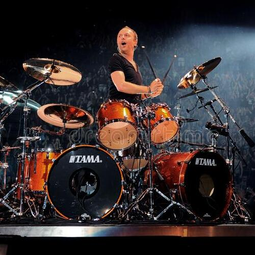
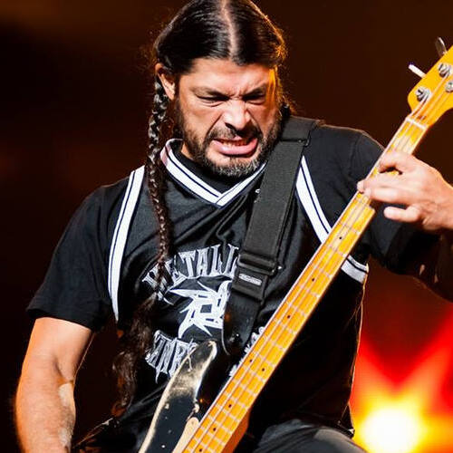

Accesorios: Ernie Ball Power Slinky strings (.11 -.48), Dunlop James Hetfield Black Fang 1.14 mm picks, Shure UR-4D Wireless Equipment,Furman AR Pro Power Conditioner.
Lars Ulrich

Nombre: Lars Ulrich
Fecha de nacimiento: 26 de diciembre de 1963
Lugar de nacimiento: Gentofte, Dinamarca
Estado Civil: Separado
Hijos: Myles Ulrich, Laune Ulrich, Bryce Ulrich
Bandas Anteriores: -
Bateria Actual: Tama Starclassic Maple, LU Depper Purple
Accesorios: Ernie Ball "Power Slinky" strings, Jim Dunlop Dunlop Jazz III Kirk Hammett(Green, purple sparkle, black sparkle), Levy Custom Straps, Peterson Strobe 420 Tuner.
Robert Trujillo

Nombre: Roberto Agustín Miguel Santiago Samuel Trujillo Veracruz
Fecha de nacimiento: 23 de octubre de 1964
Lugar de nacimiento: Santa Monica, California, Estados Unidos
Estado Civil: Casado
Hijos: Tye Trujillo, Lula Trujillo
Bandas Anteriores: Suicidal Tendencies, Ozzy Osbourne, Black Label Society
Accesorios: Ernie Ball "Power Slinky" strings, Jim Dunlop Dunlop Jazz III (Green, purple sparkle, black sparkle), Levy Custom Straps, Peterson Strobe 420 Tuner, MXR Distorcion.